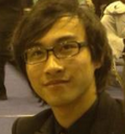

 Hi, 我叫张弘彬， 吉利汽车研究院在职产品经理，英国帝国理工生物工程研究生。2017年毕业。
伦敦帝国理工学院 (Imperial College London ) 2013.10-2017.07
生物医学工程(Biomedical Engineering) 硕士 在读 一等学位
所学课程: 随机森林 决策树 神经网络 机器学习 电脑视觉 人工智能 生物医学 商业和金融 等
毕业项目: 研究超分辨率重构,低分辨率图像做输入,高分辨率图像做输出,训练神经网络。这个神经网络在超分辨率重构方面有较好表现。除此之外,我还利用 GAN 模型训练并生成图像,然后编写了一套图灵测试系统用来衡量模型的画图能力。在设计测试系统的过程中,我认识到视觉刺激的强度会对人的认知产生影响。过去的图灵测试系统都没有考虑这一因素,我的图灵测试的主要特点是校准了视觉刺激长短对认知的影响。 利用这一思路开发的图灵测试系统会比其他测试有更高的可信度。我用 MATLAB 编写了一套此类图灵测试系统,这套系统已被我所在的实验室广泛使用。 大三项目: 挖掘手机 Wifi 信息和地理位置信息的关系。算法设计和代码实现都是由我完成。由于室内 Wifi 信号异常脆弱,首先需要对 Wifi 添加缺失值然后正则化处理,之后我还设计了一个地理位置建模系统,将地理信息准确得标注在地图上。然后将测试得到的 Wifi 信息和地理位置信息一起放入模型训练。我们测试过常见的 Random Forest 模型,SVM 模型,KNN 模型等,评估表现以后确定使用 SVM 模型。 最终通过手机陀螺仪的校准,判断用户的行动轨迹,再次重复确认手机在室内的具体位置。实现平台为 Matlab,最终准确度为±1.5m。
其他项目:实现了一个图像识别的算法BOW。首先利用SIFT 算法得到特征点,然后进行K means 聚类(我也测试过Random forest 在运算速度和准确度的权衡下最终选择 K means ),得到比较有代表性的特征点。然后对每张图像的特征点进行量化处理,得到特征点的频率分布作为特征,然后将频率分布和图像的类别放入 Random Forest 模型,最终确定图片的具体类别。 我还把这个算法写了一个中文版说明,放在知乎专栏上。
Rendcomb College (英国高中) 2011.10-2013.07
所学科目和成绩:数学(A),高等数学(A)化学(A) 物理(A)
全英数学奥林匹克竞赛(BMO1)优胜奖
吉利汽车研究院 2017.11now
互联网产品经理 2018.09 - now
副总裁助理 2017.11 - 2018.09
深圳米筐科技有限公司 2016.07-2016.09
量化金融实习生
帝国理工学院 电脑视觉研究组 2014.07-2014.09
实习生
中科院宁波材料所– 有机太阳能电池小组 2012.08 -2012.08
实验室实习生
伦敦帝国理工学院中国学生学者联谊会 2014.10-2015.06
外联部部长
主要工作:组织举办三场超过 500 人参与的大型派对。 从中不仅学到了和外国人,中国人沟通交流的能力,还锻炼了大型活动的策划组织能力。卓越的组织能力和踏实的工作风格赢得了其他工作人员的一致好评
维多利亚和阿尔伯特博物馆中国周特别活动 2015.02
组织者
主要工作:与维多利亚和阿尔伯特博物馆工作人员合作,举办中国传统佳节宣传活动。在活动当天介绍中国传统节庆并引导英国普通民众参与和春节有关的小游戏。通过中国周活动,向英国民众传播中国文化,让英国了解中国多一扇窗口。